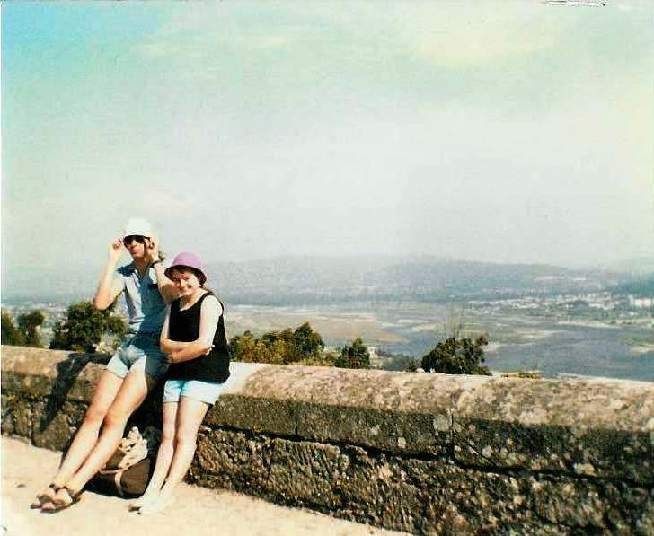

Inter Rail 1986 Day 5
Wednesday 27th August 1986
Not the quietest of nights. Noisy householdera, noisy pedestrians, cockerels, church bells and water spreading street cleaning lorries. Despite that still managed to get a good nights sleep. No breakfast included in the room rate as didtinct lack of cash meant no purchase of breakfast before heading to the train station.

The train to Vigo was slightly late. The journey followed the river Vigo all the way to the sea and was incredibly beautiful. In Vigo we were able to change some cash and buy soem food. Only just managed to catch our next train which was a really local train.
At the final station in Spain, tons and tons and tons of little old ladies piled onto the train. They were shoving laden shopping bags through the windows. Within seconds we couldn't hear ourselves speak. They were loaded up with masses of green bananas and joints of meat. They proceeded to argue vehemently with each other and stuff meat down their dresses and blouses and up their jumpers.
At the Spanish border, the Spanish guards checked we had a passport but totally ignored the locals. At the Portuguese border, we had to get off the train and fill in a form. Eventually managed to persuade a guard to stamp our passports. Again the locals were ignored. As soon as we left the border, the hidden meat was extracted and put back into the shopping bags.
No long later Roger realised he had left his camera behind at the border. He got off at the next stop and went back by himself after arranging to meet us in Viana do Castelo. The train made its way along the coast past some nice beaches. We arrived at Viana do Castelo at about 3.15pm.
We found a nice old lady who offered us some accommodation. She took an awfully long time to realise we were 3 plus one other coming later.A local lass who spoke some English helped us out with the translation. We got 2 rooms (split male/female as before) for £3.50 each. We packed a small bag and headed back to the station to see when Roger was likely to be arriving.
We then headed off to the funicular railway which takes you up to the Basilica or Temple of the Sacred Heart of Jesus, better known as Temple of Santa Luzia. It only costs 12.5p to go up to the top so we piled on as did loads of others. The views from the top were spectacular. At one point we had to go charging into the woods to rescue Eli's hat which had blown away. Jon eventually found it and was rewarded with an ice-cream.
The inside of the basilica was quite modern. Lovely circular stained glass windows and dome painted in different zones of blue with angels on the outside and Jesus in the middle. Set off down the steps to meet up with the train we expected Roger to be on. Bought 3 33cl bottles of Carlsberg for 75p.
Roger arrived with his camera so we had another round of drinks to celebrate. Went back to the rooms to change before heading out to look for a meal. Down by the quay we saw a double decker bus, a Russian trawler / factory ship and a very dwty ferry. Had meal down there whilst listening to "Land of Hope and Glory" on the television.
Back at the rooms the discovery of a full po under the bed didn't auger well for a good nights sleep. Also had to ignore the noises emanating from the doves, rabbits and chicken in the roof outside our window. Ended up having to take a Franol about 2.00am. Turned around in bed to face an entirely different direction and finally got some sleep.
{kind=link}
{kind=link}
{kind=link}
{kind=link}
{kind=link}